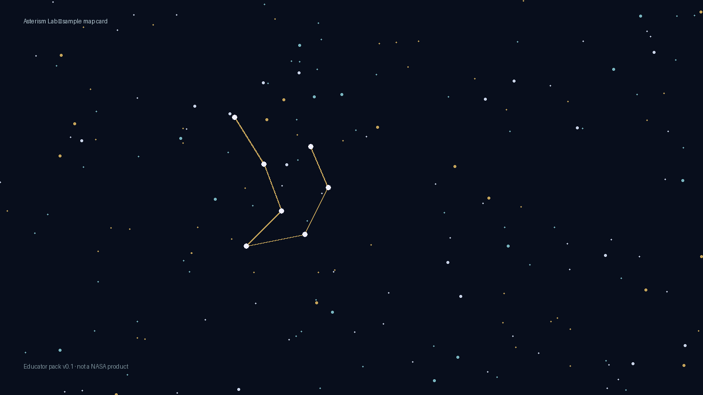

Asterism Lab · archive · not a product
Sky-mapping research history
Not for sale. The IAU / Age-of-Aquarius remap is not a product. No map SKU. No classroom pack checkout. Space money that existed was intros / abstract writing — see the space intros note.

Competence residue only
Free sample plate and brief so a stranger can see the research history. Anthropological sky-mapping (asterisms as season/story/time), not a remap you can buy.
Proof of competence: IAU proposal post. Do not order the remap.
Locked brief
Asterism Lab is an archive door under Graphic Oregon. It does not sell Steve’s remap. If someone wants space work, they quote intros / abstract writing — never a sky-map SKU.
Parent: Graphic Oregon · Company Soup